| Обозначение | Тип/номинал | Описание | Корпус | Фото | Назначение | Возможная замена |
|---|---|---|---|---|---|---|
Системная плата | ||||||
Микросхемы: процессор и контроллеры | ||||||
| U1 | Zilog Z84С00XX | Процессор Z80, поддерживаемая тактовая частота не менее 4 МГц | DIP-40 в панельке |
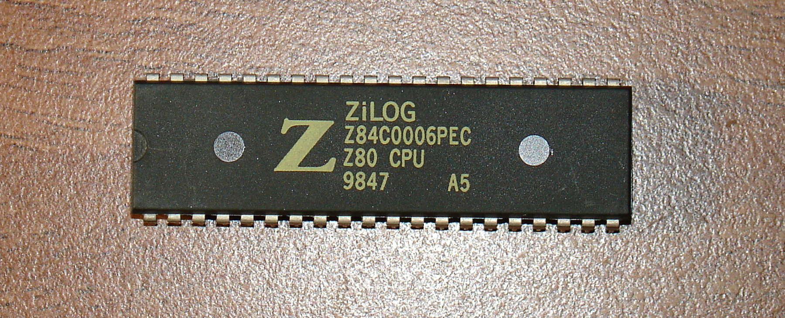 |
Центральный процессор |
Zilog Z84С0006 (6.17МГц), Zilog Z84C0008 (8МГц), Zilog Z84C0010 (10МГц), Zilog Z84C0020 (20МГц) |
| U2 | Intel 82C55A | Программируемый параллельный интерфейс | DIP-40 в панельке |
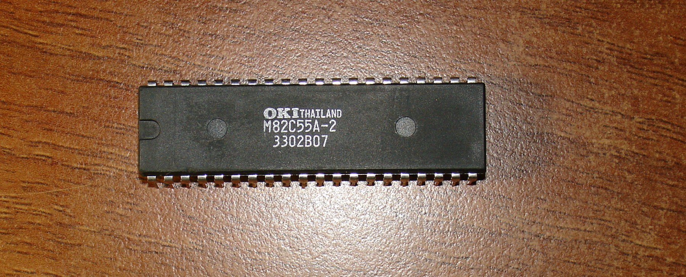 |
Выбор первичного слота маппера, подключение клавиатуры, управление магнитофоном |
Toshiba TMP82C55A, Intersil 82C55, Harris 82C55A, OKI MSM82C55A-2, UMC UM82C55A, NEC μPD8255A |
| U3 | Yamaha V9958 | Видеопроцессор | DIP-64 в панельке | Формирование видеосигнала | Yamaha V9938 | |
| U4 | Yamaha YM2149 | Аудиопроцессор | DIP-40 в панельке |
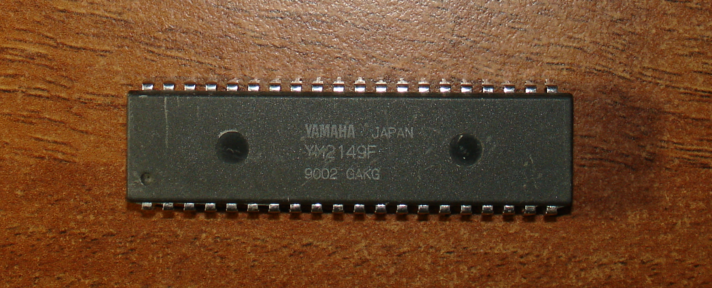 |
Синтез звуков и музыки, подключение джойстиков | General Instrument AY-3-8910 |
| U5 | Ricoh RP5C01 | Часы реального времени | DIP-18 в панельке |
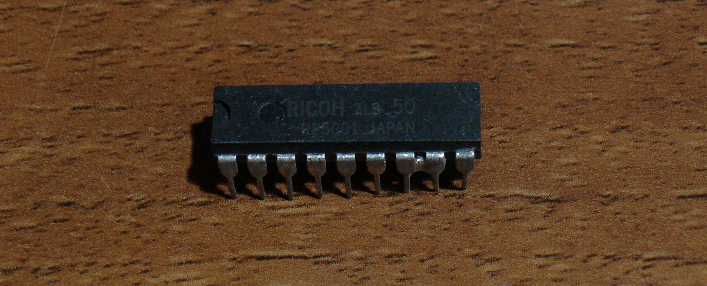 |
Обеспечение энергонезависимого отсчёта даты и времени | |
Микросхемы: память | ||||||
| U6 | SST SST39SF040 | Энергонезависимая память, 512К слов (допускается 256К слов) по 8 бит с пятивольтовым питанием | DIP-32 в панельке |
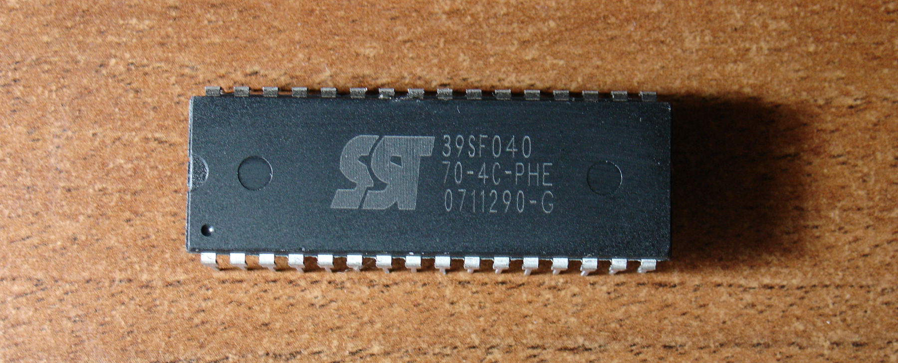 |
ПЗУ с BIOS, BASIC |
SST SST39SF020A, AMD Am29F040B, Microchip SST39SF040, Microchip SST39SF020 |
| U7 | Alliance Memory AS6C4008 | Статическая оперативная память, 512К слов по 8 бит | DIP-32 в панельке | ОЗУ |
Hitachi HM628512, BSI BS62LV4006PC |
|
| U8, U9, U10, U11 | NEC μPD41464 | Динамическая оперативная память, 65536 слов по 4 бита | DIP-18 в панельке |
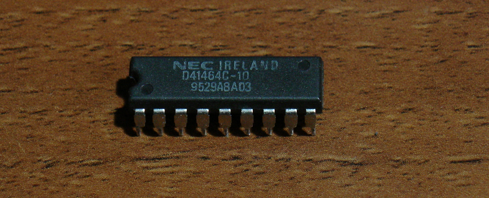 |
ОЗУ для видеопроцессора U3 |
Toshiba TMM41464AP, Samsung KM41464A, Hyndai HY53C464, Futjitsu MB81464 |
Микросхемы: программируемая логическая матрица | ||||||
| U12, U13, U14 | ATF16V8B | Логическая матрица | DIP-20 в панельке |
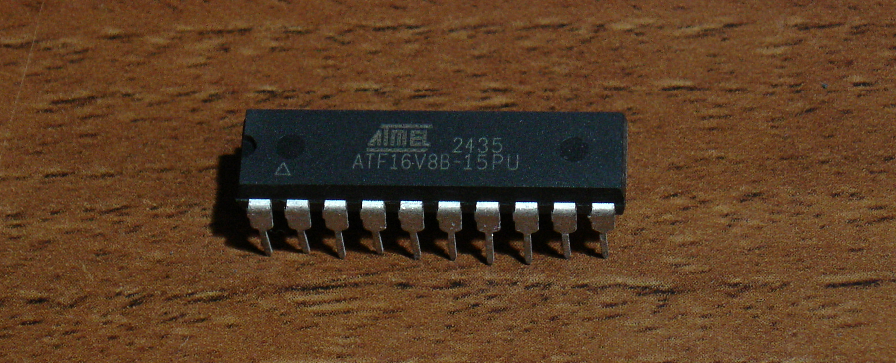 |
Lattice Semiconductor GAL16V8B | |
Микросхемы: триггеры, счётчики, регистры и т.д. | ||||||
| U15, U16, U17, U18 | Texas Instruments CD74HC670E | Регистр 4x4 | DIP-16 в панельке |
Toshiba 74HC670AP, Philips 74HC670, Hitachi HD74HC670 |
||
| U19, U20, U21 | Texas Instruments SN74F541N | Восьмиразрядный регистр | DIP-20 в панельке | |||
| U22 | Texas Instruments SN74HCT540 | Восьмиразрядный регистр | DIP-20 в панельке | |||
| U23, U24 | Texas Instruments SN74HCT273N | Восьмиразрядный регистр | DIP-20 в панельке | Texas Instruments CD74HCT273 | ||
| U25, U26 | Texas Instruments SN74F245N | Восьмиканальный двунаправленный формирователь | DIP-20 в панельке |
Texas Instruments SN74LS245N, Motorola MC74F245 |
||
| U27 | Texas Instruments CD74HCT175E | Счетверённый D-триггер | DIP-16 в панельке | |||
| U28, U29 | Texas Instruments SN74HCT157N | Четырёхразрядный мультиплексор 2-1 | DIP-16 в панельке | Texas Instruments CD74HCT175E | ||
| U30, U31 | Texas Instruments CD74HCT153E | Сдвоенный селектор-мультиплексор 4-1 | DIP-16 в панельке | |||
| U32 | Texas Instruments SN74AHCT138N | Дешифратор 3 разряда на 8 направлений | DIP-16 в панельке | |||
| U33 | Texas Instruments SN74AHCT125N | Четыре буферных элемента | DIP-14 в панельке | |||
| U34, U35, U36 | Texas Instruments SN74HCT74N | Два D-триггера | DIP-14 в панельке |
Texas Instruments CD74HCT74E, Philips 74HCT74, Nexperia 74HCT74D, National Semiconductor DM74LS74A, Hitachi HD74LS74A, Farchild Semiconductors DM74LS74A, Motorola SN74LS74A |
||
Микросхемы: комбинаторная логика | ||||||
| U37, U38, U39 | Texas Instruments SN74AHCT32N | 4 логических элемента 2ИЛИ | DIP-14 в панельке |
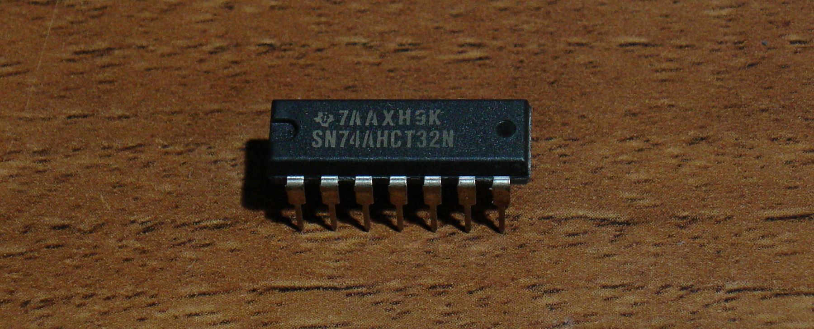 |
||
| U40, U41 | Texas Instruments CD74HCT30E | Логический элемент 8И-НЕ | DIP-14 в панельке | |||
| U42 | Texas Instruments SN74LS07N | 6 буферных формирователей с открытым коллекторным выходом | DIP-14 в панельке | Texas Instruments SN7407N | ||
| U43 | Texas Instruments SN74HCT04N | 6 логических элементов НЕ | DIP-14 в панельке | Texas Instruments CD74HCT04E | ||
| U44 | Texas Instruments SN74AHCT02N | 4 логических элемента 2ИЛИ-НЕ | DIP-14 в панельке | Texas Instruments CD74HCT02E | ||
| U45 | Texas Instruments SN74HCT00N | 4 логических элемента 2И-НЕ | DIP-14 в панельке | Texas Instruments CD74HCT00E | ||
Микросхемы: цифро-аналоговые | ||||||
| U46 | Analog Devices ADM691A | Монитор напряжения питания | DIP-16 в панельке |
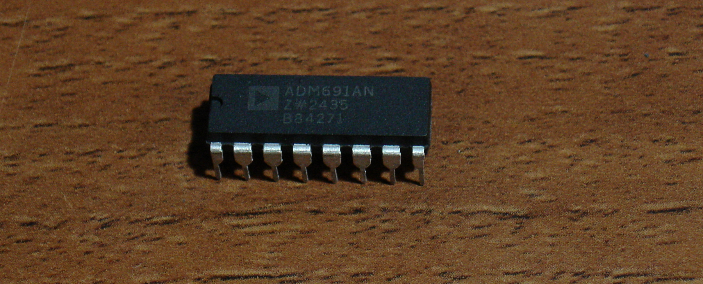 |
Установка состояния "Сброс" при выходе питающего напряжения за пределы |
Maxim Intergated MAX691CPE, Maxim Intergated MAX691ACPE |
| U47 | Sony CXA1645P | Энкодер PAL/NTSC | DIP-24 (400 mil) в панельке | Формирователь композитного видеосигнала для выхода J3 | ||
| U48 | Microchip Technology MCP6281-E/P | Операционный усилитель | DIP-8 в панельке | Усиление аудиосигнала, идущего на выход J3 | Texas Instruments OPA340PA | |
| U49 | Texas Instruments LM311N | Компаратор напряжений | DIP-8 в панельке | Преобразование сигнала от магнитофонного входа J6 к цифровому виду | ||
Конденсаторы | ||||||
| C1, C2, C3, C4, C5, C6, C7, C8, C9, C10, C11, C12, C13, C14, C15, C16, C17, C18, C19, C20, C21, C22, C23, C24, C25, C26, C27, C28, C29, C30, C31, C32, C33, C34, C35, C36, C37, C38, C39, C40, C41, C42, C43, C44, C45, C46, C47, C48, C49, C50, C51, C52, C53, C54, C55, C56, C57, C58 | Vishay K104K15X7RF53H5 | Многослойный керамический конденсатор 0.1 мкФ, 50 В, диэлектрик X7R, допуск ±10% | Радиальные выводы 5 мм |
С1-C49 развязывающие конденсаторы микросхем U1-U49, C50 развязывающий конденсатор и фильтр помех цепи питания энкодера PAL/NTSC U47, C51-С53 гальваническая развязка сигналов цветности R,G,B от видеопроцессора U3 к энкодеру PAL/NTSC U47, C54, C55 обвязка энкодера PAL/NTSC U47, C56 обвязка видеопроцессора U3, C57 обвязка операционного усилителя, формирующего сигнал аудиовыхода, C58 развязывающий конденсатор и фильтр помех цепи питания видеопроцессора U3 |
||
| C68, C69, C70 | TDK FG28X5R1E106MR00 | Многослойный керамический конденсатор 10 мкФ, 25 В, диэлектрик X5R, допуск ±20% | Радиальные выводы 5 мм |
C68 развязывающий конденсатор оперативной и постоянной памяти, C69 развязывающий конденсатор и фильтр помех цепи питания энкодера PAL/NTSC U47, C70 развязывающий конденсатор и фильтр помех цепи питания видеопроцессора U3 |
||
| C59, C60, C61, C62, C63, C64 | Nichicon UBW1E221MPD | Алюминиевый электролитический конденсатор 220 мкФ, 25 В, допуск ±20% | Цилиндрический корпус диаметром 10 мм, длиной 12.5 мм, расстояние между выводами 5 мм |
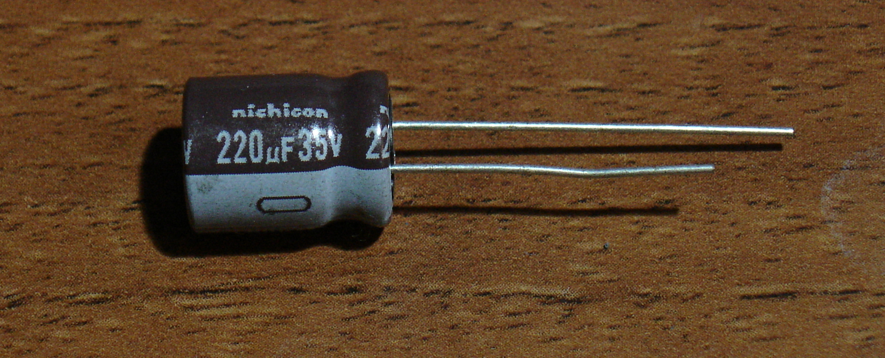 |
Гальваническая развязка выходов компонентного и композитного видеосигналов |
Nichicon UHE1E221MPD, Nichicon UHE1V221MPD, Nichicon UPW1E221MPD, Nichicon UPW1V221MPD |
| C65, C66, C67 | Kemet A750EK107M1CAAE018 | Алюминиевый полимерный конденсатор 100 мкФ, 16 В, допуск ±20% | Цилиндрический корпус диаметром 6.3 мм, длиной 8 мм, расстояние между выводами 2.5 мм |
C65 развязывающий конденсатор по основному напряжению питания (VCC), C66 развязывающий конденсатор по напряжению +12 В (VDD), C67 развязывающий конденсатор по напряжению -12 В (VSS) |
||
| C71, C72, C73, C74, C75, C76, C77 | Panasonic EEUFR1H100 | Алюминиевый электролитический конденсатор 10 мкФ, 50 В, допуск ±20% | Цилиндрический корпус диаметром 5 мм, длиной 11 мм, расстояние между выводами 2 мм |
C71 обвязка операционного усилителя на входе магнитофонного сигнала, C72-C75 гальваническая развязка объединения источников звуковых сигналов, C76 гальваническая развязка аудиовыхода, C77 обвязка энкодера PAL/NTSC U47 |
||
| C78 | Wurth Elektronik 860020672005 | Алюминиевый электролитический конденсатор 1 мкФ, 50 В, допуск ±20% | Цилиндрический корпус диаметром 5 мм, длиной 11 мм, расстояние между выводами 2 мм | Гальваническая развязка выхода магнитофонного сигнала | ||
| C79, C80 | TDK FG28X7R1H223KNT0 | Многослойный керамический конденсатор 22 нФ, 50 В, диэлектрик X7R, допуск ±10% | Радиальные выводы 5 мм |
C79 фильтр нижних частот выхода магнитофонного сигнала, C80 гальваническая развязка входа магнитофонного сигнала |
||
| C81 | TDK FG28C0G1H152JNT0 | Многослойный керамический конденсатор 1.5 нФ, 50 В, диэлектрик C0G, допуск ±5% | Радиальные выводы 5 мм | Обвязка операционного усилителя, формирующего сигнал аудиовыхода | ||
| C82, C83, C84 | TDK FG28C0G1H331JNT0 | Многослойный керамический конденсатор 330 пФ, 50 В, диэлектрик C0G, допуск ±5% | Радиальные выводы 5 мм | Фильтр нижних частот сигналов цветности R,G,B от видеопроцессора U3 к энкодеру PAL/NTSC U47 | ||
| C85 | TDK FG28C0G1H470JNT0 | Многослойный керамический конденсатор 47 пФ, 50 В, диэлектрик C0G, допуск ±5% | Радиальные выводы 5 мм | Фильтр нижних частот цепи синхросигнала на входе энкодера PAL/NTSC U47 | ||
| C86, C87 | TDK FG28C0G1H330JNT0 | Многослойный керамический конденсатор 33 пФ, 50 В, диэлектрик C0G, допуск ±5% | Радиальные выводы 5 мм | Нагрузочные конденсаторы кварцевого резонатора Y2 часов реального времени | ||
| C88, C89, C90 | EW Electronics GKG30015-ND, возможна установка постоянного конденсатора TDK FG28C0G2A270JNT0 | Керамический подстроечный конденсатор 6.5 ... 30 пФ (зелёный), 100 В, расстояние между выводами 5 мм |
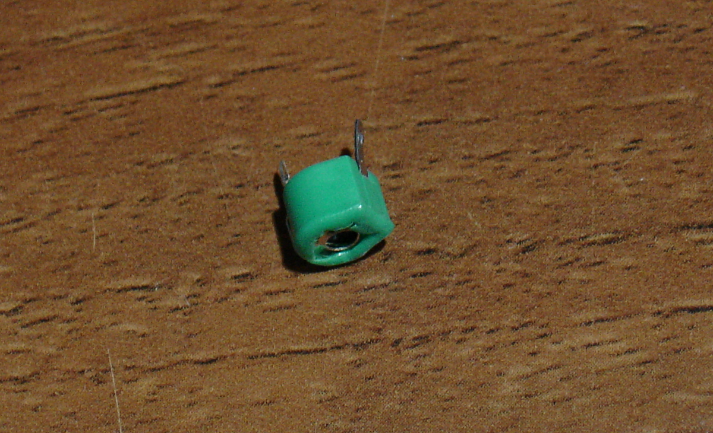 |
Подстроечные конденсаторы кварцевых резонаторов Y1, Y2, Y3 | muRata TZ03R300ER169 | |
| C91 |
TDK FG28C0G2A270JNT0 для NTSC, TDK FG28C0G2A180JNT0 для PAL |
многослойный керамический конденсатор 27 пФ, 100 В, диэлектрик C0G, допуск ±5% для NTSC или 18 пФ, 100 В, диэлектрик C0G, допуск ±5% для PAL | Радиальные выводы 5 мм | Обвязка энкодера PAL/NTSC U47 | ||
| C92, C93 | TDK FG28C0G1H220JNT0 | Многослойный керамический конденсатор 22 пФ, 50 В, диэлектрик C0G, допуск ±5% | Радиальные выводы 5 мм |
C92 нагрузочный конденсатор кварцевого резонатора Y1 для формирования тактовой частоты видеопроцессора U3, C93 нагрузочный конденсатор кварцевого резонатора Y3 для формирования поднесущей цветности видеосигнала в системе кодирования цветности PAL |
||
| C94 | TDK FG28C0G1H4R7CNT0 | Многослойный керамический конденсатор 4.7 пФ, 50 В, диэлектрик C0G, допуск ±0.25 пФ | Радиальные выводы 5 мм | Фильтр нижних частот на входе частоты поднесущей PAL энкодера PAL/NTSC U47 | ||
Резисторные сборки | ||||||
| RR1, RR2, RR3, RR4 | Bourns 4610X-AP1-103LF | Сборка из девяти резисторов 10 кОм с общим выводом | SIP-10 |
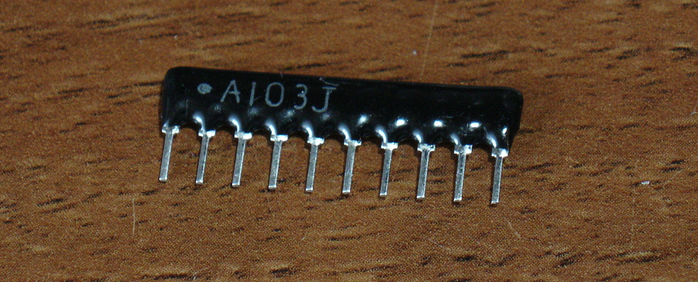 |
||
| RR5, RR6, RR7 | Bourns 4610X-AP1-472LF | Сборка из девяти резисторов 4.7 кОм с общим выводом | SIP-10 |
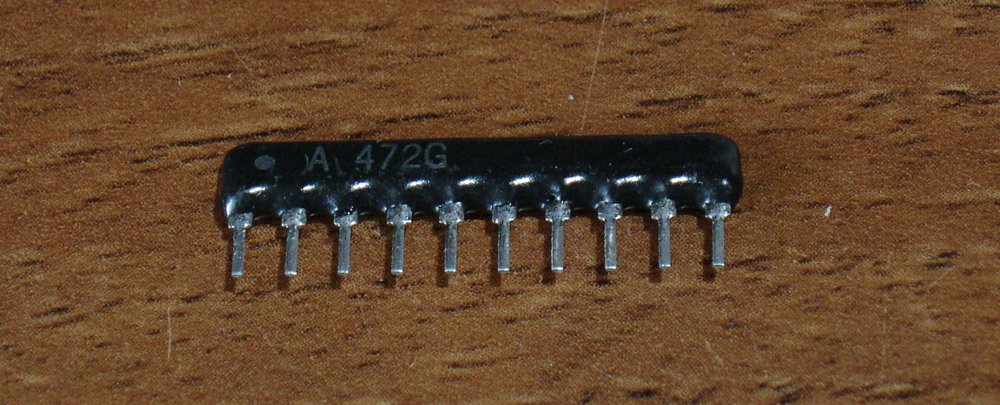 |
||
| RR8, RR10 | Bourns 4606X-AP1-472LF | Сборка из пяти резисторов 4.7 кОм с общим выводом | SIP-6 |
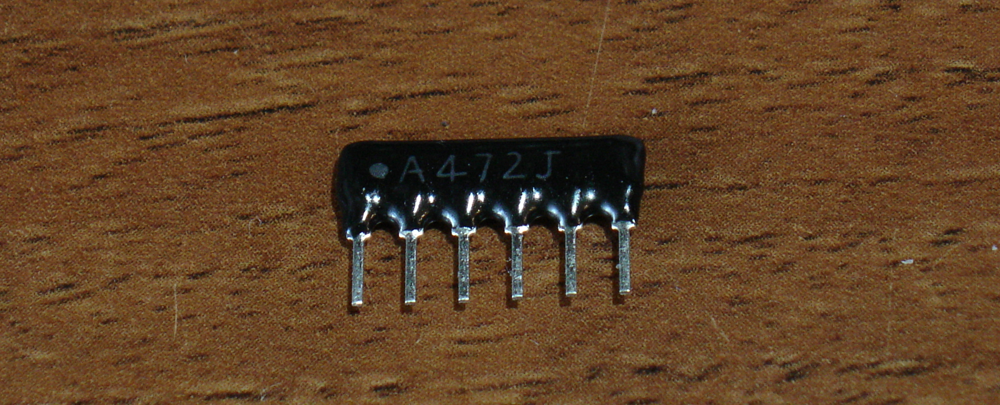 |
||
| RR9 | Bourns 4606X-AP1-471LF | Сборка из пяти резисторов 470 Ом с общим выводом | SIP-6 |
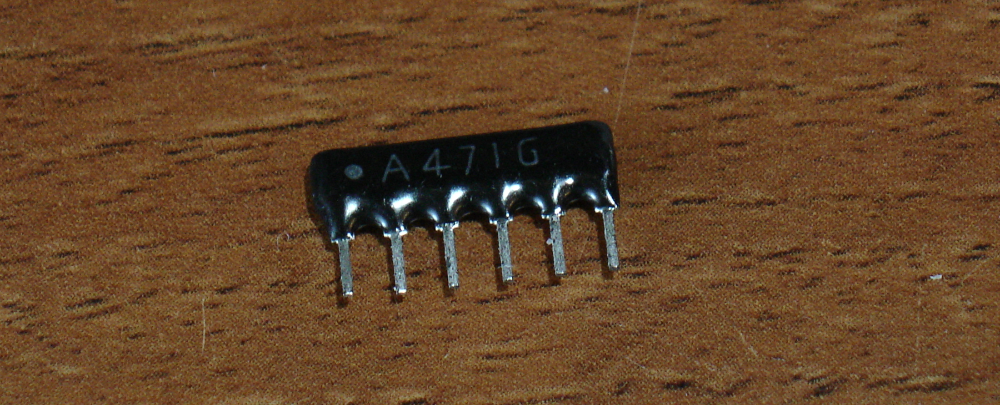 |
||
Резисторы | ||||||
| R1 | Yageo MFR-25FBF52-1M | Металлоплёночный резистор 1 МОм, 0.25 Вт, допуск ±1% | Осевые выводы |
Yageo MFP, Panasonic ERXL, Panasonic ERX, Vishay SFR, советские МЛТ, российские С2-23 |
||
| R2, R3 | Yageo MFR-25FBF52-470K | Металлоплёночный резистор 470 кОм, 0.25 Вт | Осевые выводы | |||
| R4 | Yageo MFR-25FBF52-220K | Металлоплёночный резистор 220 кОм, 0.25 Вт | Осевые выводы | |||
| R5, R6 | Yageo MFR-25FBF52-100K | Металлоплёночный резистор 100 кОм, 0.25 Вт | Осевые выводы | |||
| R7, R8 | Yageo MFR-25FBF52-47K | Металлоплёночный резистор 47 кОм, 0.25 Вт | Осевые выводы | |||
| R9 |
Yageo MFR-25FBF52-20K для NTSC, Yageo MFR-25FBF52-16K для PAL, |
Металлоплёночный резистор 20 кОм, 0.25 Вт, допуск ±не хуже 1% для NTSC или 16 кОм, 0.25 Вт, допуск ±не хуже 1% для PAL | Осевые выводы | |||
| R10 | Yageo MFR-25FBF52-20K | Металлоплёночный резистор 20 кОм, 0.25 Вт | Осевые выводы | |||
| R11, R12, R13, R14 | Yageo MFR-25FBF52-10K | Металлоплёночный резистор 10 кОм, 0.25 Вт | Осевые выводы | |||
| R15 | Yageo MFR-25FBF52-5K6 | Металлоплёночный резистор 5.6 кОм, 0.25 Вт | Осевые выводы | |||
| R16, R17, R18, R19, R20, R21, R22 | Yageo MFR-25FBF52-4K7 | Металлоплёночный резистор 4.7 кОм, 0.25 Вт | Осевые выводы | |||
| R23, R24 | Yageo MFR-25FBF52-2K7 | Металлоплёночный резистор 2.7 кОм, 0.25 Вт | Осевые выводы | |||
| R25, R26 | Yageo MFR-25FBF52-2K2 | Металлоплёночный резистор 2.2 кОм, 0.25 Вт | Осевые выводы | |||
| R27, R28, R29, R30, R31, R32, R33 | Yageo MFR-25FBF52-1K | Металлоплёночный резистор 1 кОм, 0.25 Вт | Осевые выводы | |||
| R34 | Yageo MFR-25FBF52-470R | Металлоплёночный резистор 470 Ом, 0.25 Вт | Осевые выводы | |||
| R35 | Yageo MFR-25FBF52-180R | Металлоплёночный резистор 180 Ом, 0.25 Вт | Осевые выводы | |||
| R36 | Yageo MFR-25FBF52-120R | Металлоплёночный резистор 120 Ом, 0.25 Вт | Осевые выводы | |||
| R37, R38, R39, R40, R41, R42 | Yageo MFR-25FBF52-100R | Металлоплёночный резистор 100 Ом, 0.25 Вт | Осевые выводы | |||
| R43, R44, R45, R46, R47, R48 | Yageo MFR-25FBF52-75R | Металлоплёночный резистор 75 Ом, 0.25 Вт | Осевые выводы | |||
Реле | ||||||
| RY1 | Omron G5V-1-DC5 | реле 5 В |
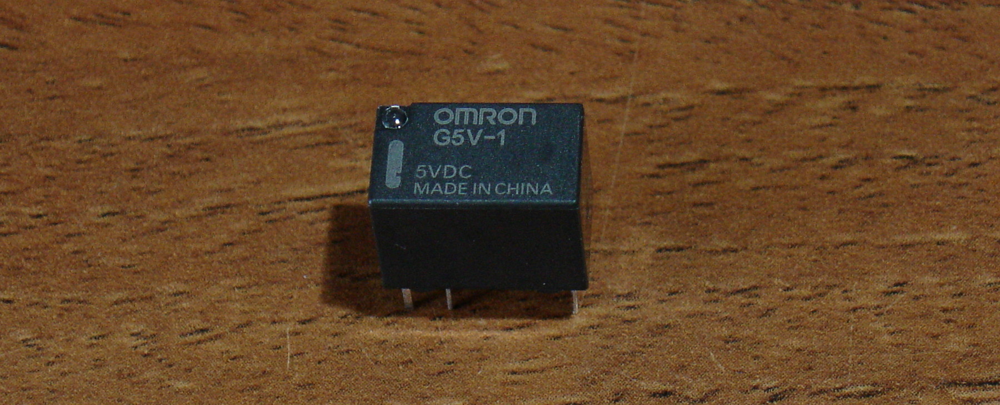 |
Включение ⁄ выключение мотора магнитофона |
Omron G5V-1-T90-DC5, Hongfa HFD23/05-1ZP |
|
Индуктивности | ||||||
| L1 | 78F680J-RC | Индуктивность 68 мкГн допуск ±5%, цилиндрическая | Осевые выводы |
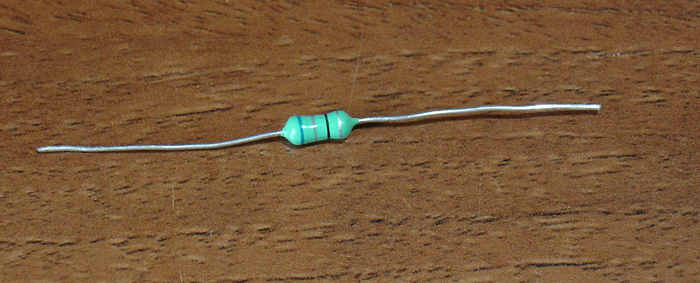 |
Обвязка энкодера U47 | |
| L2, L3 | 78F5R6J-RC | Индуктивность 5.6 мкГн допуск ±5%, цилиндрическая | Осевые выводы |
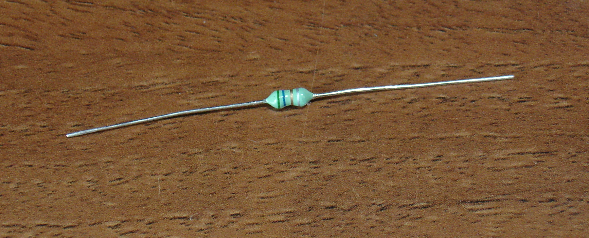 |
Фильтрация питающего напряжения видеопроцессора U3 | |
Диоды | ||||||
| D1 | Philips 1N4148 | Быстродействующий импульсный кремниевый диод общего назначения | DO-35 (SOD-27) | Защита транзистора Q1 от ЭДС в обмотке рэле RY1 |
Vishay 1N4148, КД522Б |
|
Транзисторы | ||||||
| Q1, Q2 | Fairchild Semiconductor PN2907A | Маломощный биполярный усилительный PNP транзистор | TO-92 |
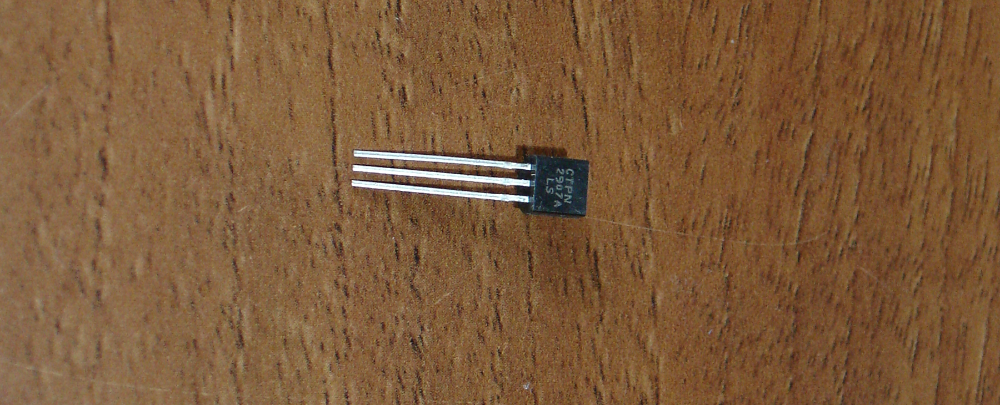 |
Q1 управление реле включения ⁄ выключения мотора магнитофона RY1, Q2 формирование синхросигнала при использовании видеопроцессора V9938 |
|
Кварцевые резонаторы | ||||||
| Y1 | HC-49/U-S21477270ABJB | Кварцевый резонатор 21.477270 МГц | HC-49US |
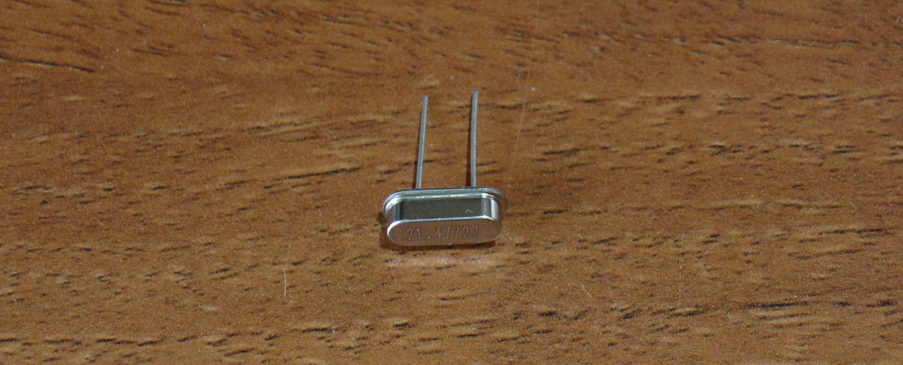 |
Генерация импульсов тактовой частоты видеопроцессора U3 | |
| Y2 | AB38T-32.768KHZ | Кварцевый резонатор 32768 Гц | SD-38 (цилиндрический длиной 8.3 мм, диаметром 3.2 мм) |
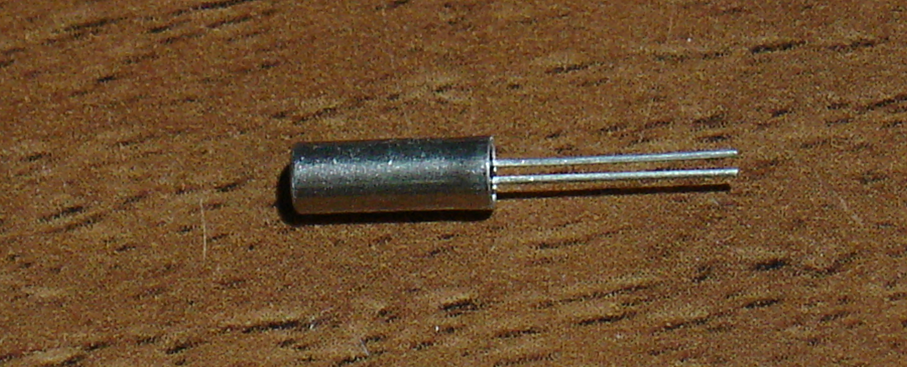 |
Генерация импульсов для часов реального времени | |
| Y3 | ECS-44-20-4X | Кварцевый резонатор 4.433618 МГц | HC-49S | Генерация импульсов поднесущей цветности видеосигнала в системе кодирования цветности PAL для энкодера PAL/NTSC U47 | ||
Предохранители | ||||||
| F1 | RUSBF075-2 | Восстанавливающийся предохранитель 750 мА, радиальные выводы |
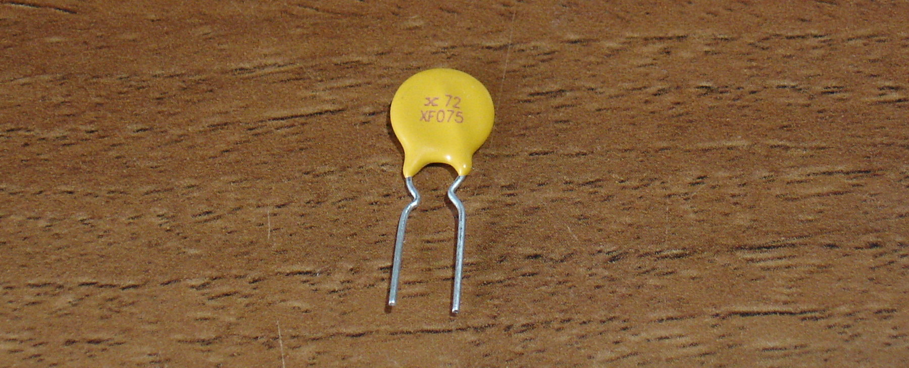 |
Предохранитель в цепи питания джойстиков | ||
Разъёмы | ||||||
| J1 | KLDX-0202-A | Трёхконтактное цилиндрическое гнездо диаметром 5.7 мм, центральный штырёк 2.0 мм |
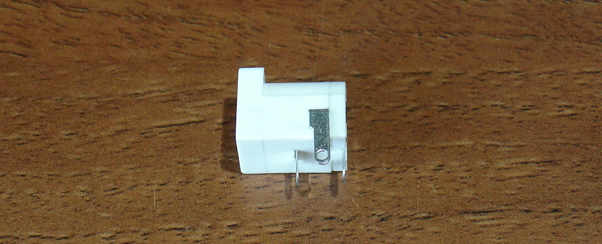 |
Вход для подключения пятивольтового питающего напряжения | ||
| J2 | Same Sky RCJ-013 | Разъём RCA белый |
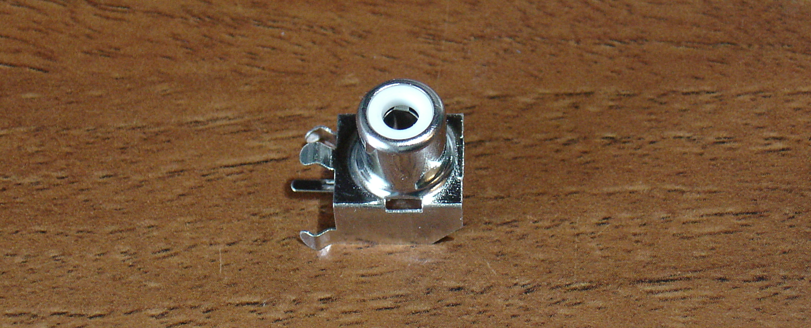 |
Выход звука |
Cobiconn 161-0360-E, Keystone Electronics Corp 936 |
|
| J3 | Same Sky RCJ-014 | Разъём RCA жёлтый |
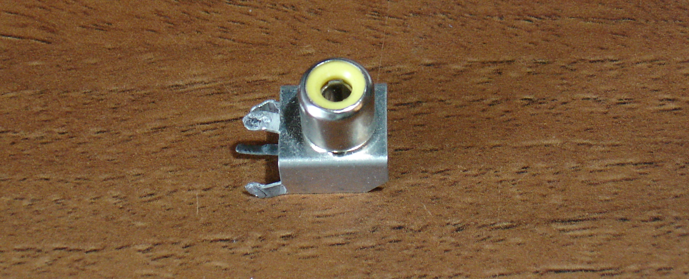 |
Выход композитного видеосигнала |
Cobiconn 161-0380-E, Keystone Electronics Corp 938 |
|
| J4 | Same Sky MD-40SM | Четырёхконтактное гнездо Mini DIN, правое угловое, для монтажа на печатную плату | Выход видео- и синхросигнала (S-видео) | CUI Inc MD-40SM | ||
| J5 | Same Sky SDF-80J | Восьмиконтактное гнездо DIN, правое угловое, для монтажа на печатную плату |
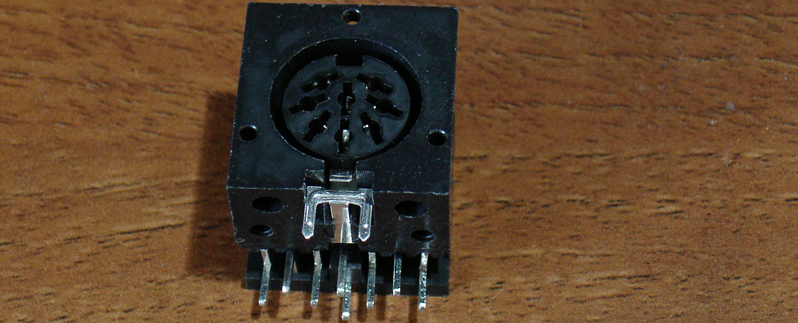 |
Выход компонентного (RGB) видеосигнала |
CUI Devices SDF-80J, RTLECS DS-8-103-270, RTLECS DS-8-101B, RTLECS DS-8-102B-262 |
|
| J6 | Same Sky SDF-80J, RTLECS DS-8-103-270, RTLECS DS-8-101B, RTLECS DS-8-102B-262 | Восьмиконтактное гнездо DIN, правое угловое, для монтажа на печатную плату | Разъём для подключения магнитофона | CUI Devices SDF-80J | ||
| J7, J8 | Amphenol L717SDE09P1ACH3R | Разъём DB-9M правый угловой на плату | Разъёмы для подключения джойстиков | |||
| J9 | NorComp 112-014-213R001 | Разъём CENR-14F правый угловой на плату | Разъём для подключения принтера | |||
| J10 | TE Connectivity 6404568 | Разъём VH, шаг 3.96 мм, 8 PIN | Разъём для подключения пятивольтового и двуполярного двенадцативольтового напряжений питания | |||
| J11 | Wurth Elektronik 61201621621 | Разъём типа BH-16 |
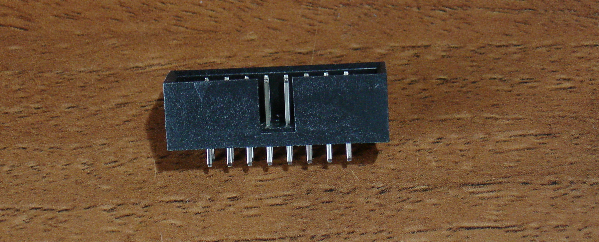 |
Разъём для подключения платы клавиатуры (через шлейф или напрямую) | ||
| J12 | 3M 929852-01-20-RB | Сдвоенная гребёнка 2 ряда по 20 гнёзд | Разъём для подключения платы расширения оперативной памяти | |||
| J13 | PLD-4 | Сдвоенная гребёнка 2 ряда по 2 штырька | Разъём с сигналами RESET и NMI | |||
| J14 | Amphenol FCI 78229-113H | Гребёнка 13 штырьков | Разъём с сигналами шины Color Bus | PLS-13 | ||
| SLOT1, SLOT2 | TE Connectivity 5530843-5 | Краевой разъём-гнездо 50 контактов |
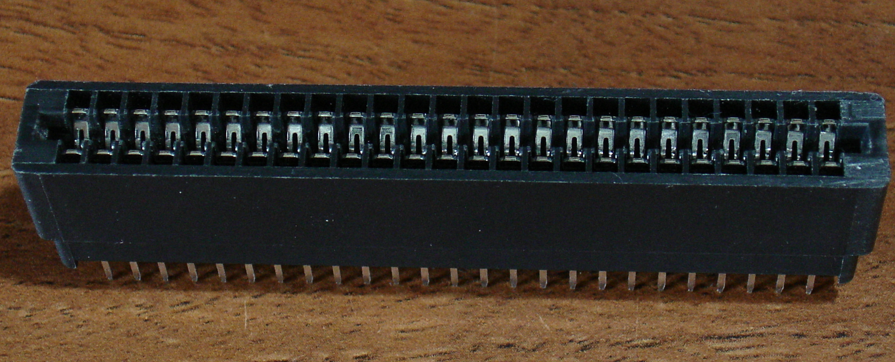 |
Разъёмы для подключения картриджей | ||
| BT1 | Eagle 2420-GR | Панель для установки элемента питания CR2032 |
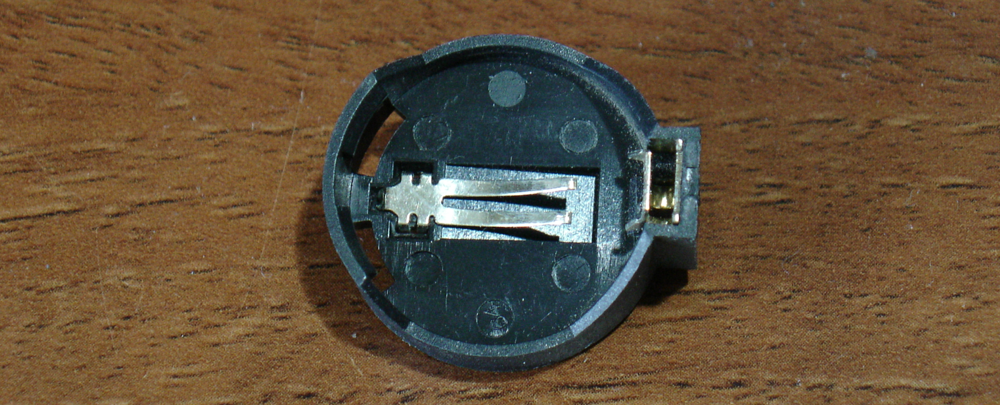 |
Подключение элемента питания для обеспечения энергонезависимости часов реального времени | ||
Перемычки | ||||||
| JP1, JP2 | Amphenol FCI 78229-102H | Гребёнка 2 штырька |
JP1 выбор используемой половины ПЗУ, JP2 выбор типа клавиатуры |
|||
| JP3, JP4, JP5, JP6 | Amphenol FCI 78229-103H | Гребёнка 3 штырька |
JP3, JP4 выбор типа видеопроцессора, JP5, JP6 выбор системы кодирования цветности | |||
| JP7, JP8 | PLD-6 | Сдвоенная гребёнка 2 ряда по 3 штырька | Выбор объёма установленной внешней памяти | |||
Плата клавиатуры | ||||||
Микросхемы: комбинаторная логика | ||||||
| U1 | Texas Instruments SN74LS145N | Двоично-десятичный дешифратор | DIP-16 в панельке | Дешифратор из четырёх двоичных разрядов на 9 рядов матрицы клавиатуры | Hitachi HD74LS145 | |
| U2 | Texas Instruments SN74LS07N | 6 буферных формирователей с открытым коллекторным выходом | DIP-14 в панельке | Буферы для светодиодов D2 и D3, буферы колонок и ряда матрицы клавиатуры, в которых возможно нажатие специальных (SHIFT, GRAPH, CODE) клавиш одновременно с обычными | ||
Светодиоды | ||||||
| D1 | VCC Optoelectronics VAOL-3HDE4 | 3 мм цилиндрический зелёный светодиод | Индикатор питания | |||
| D2 | VCC Optoelectronics VAOL-3HCE4 | 3 мм цилиндрический жёлтый светодиод | Индикатор режима CapsLock | |||
| D3 | VCC Optoelectronics VAOL-3HAE4 | 3 мм цилиндрический красный светодиод | Индикатор режима Code или Kana | |||
Диоды | ||||||
| D4, D5, D6 | Philips 1N4148 | Быстродействующий импульсный кремниевый диод общего назначения | DO-35 (SOD-27) | Обеспечение возможности нажатия специальных (SHIFT, GRAPH, CODE) клавиш одновременно с обычными |
Vishay 1N4148, КД522Б |
|
Резисторы | ||||||
| R1, R2, R3 | Xicon 291-470-RC | Резистор из углеродной плёнки 470 Ом, 0.25 Вт, допуск ±5% | Осевые выводы | Токоограничительные резисторы для светодиодов D1, D2, D3 | ||
| RN1 | Xicon 264-4.7K-RC | Сборка из пяти резисторов 4.7 кОм с общим выводом | SIP-6 | Подтяжка к питанию входов буферов матрицы клавиатуры U2 | Bourns 4606X-AP1-472LF | |
Ёмкости | ||||||
| C1, C2 | Vishay K104K15X7RF53H5 | Многослойный керамический конденсатор 0.1 мкФ, 50 В, диэлектрик X7R, допуск ±10% | Радиальные выводы 5 мм | Развязывающий конденсатор для микросхем U1 и U2 | ||
| C3 | TDK FG28X5R1E106MR00 | Многослойный керамический конденсатор 10 мкФ, 25 В, допуск ±20% | Радиальные выводы 5 мм | Развязывающий конденсатор для платы клавиатуры | ||
Разъёмы | ||||||
| J1 | Wurth Elektronik 61201621721 для подключения шлейфа или Samtec ESQ-108-12-L-D для непосредственного подключения платы клавиатуры | Разъём BH-16 правый угловой, или высокие двухрядные гнёзда, шаг 2.54 мм |
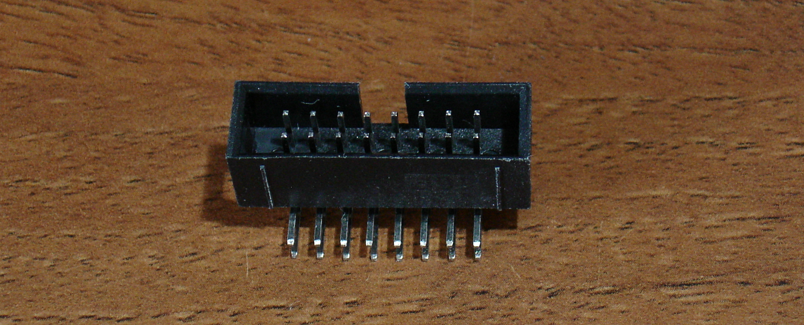 |
Разъём для подключения к системной плате шлейфом или непосредственно | ||
Кнопки | ||||||
| SW1, SW2, SW3, SW4, SW5, SW6, SW7, SW8, SW9, SW10, SW11, SW12, SW13, SW14, SW15, SW16, SW17, SW18, SW19, SW20, SW21, SW22, SW23, SW24, SW25, SW26, SW27, SW28, SW29, SW30, SW31, SW32, SW33, SW34, SW35, SW36, SW37, SW38, SW39, SW40, SW41, SW42, SW43, SW44, SW45, SW46, SW47, SW48, SW49, SW50, SW51, SW52, SW53, SW54, SW55, SW56, SW57, SW58, SW59, SW60, SW60, SW61, SW63, SW64, SW66, SW67, SW68, SW69, SW70, SW71, SW72, SW73 | MX Cherry MX1A-11NW | Кнопка для клавиатуры, совместимая с MX Cherry, линейная характеристика, для монтажа на печатную плату, с вырезом для установки светодиода | Кнопка для всех клавиш, кроме "пробела" | |||
| SW65 | MX Cherry MX1A-21NW | Кнопка для клавиатуры, совместимая с MX Cherry, линейная характеристика с увеличенным усилием нажатия, для монтажа на печатную плату | Кнопка для клавиши "пробел" | |||
{kind=link}
{kind=link}
{kind=link}
{kind=link}
{kind=link}
{kind=link}
{kind=link}
{kind=link}
{kind=link}
{kind=link}
{kind=link}
{kind=link}
{kind=link}
{kind=link}
{kind=link}
{kind=link}
{kind=link}
{kind=link}
{kind=link}
{kind=link}
{kind=link}
{kind=link}
{kind=link}
{kind=link}
{kind=link}
{kind=link}
{kind=link}
{kind=link}
{kind=link}
{kind=link}